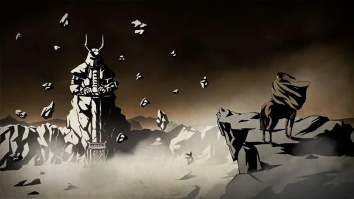
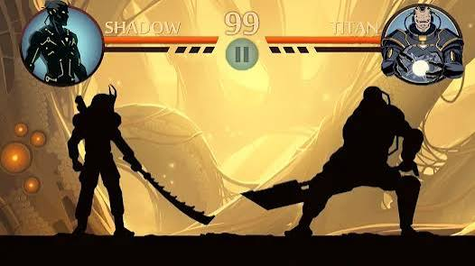

Enter The Gates Of Shadows
The game follows an arrogant, unbeatable warrior known only as Shadow. Seeking a worthy opponent, he travels to the forbidden Gates of Shadows and breaks the seal. By opening them, he unleashes six powerful demons into the world, and the magical energies tear away his flesh, leaving him as a living silhouette. Now, he must defeat each demon to reclaim their seals and close the gates forever.

What makes this game stand out is its unique visual style and incredibly smooth, realistic physics-based martial arts combat. Fighting as a distinct shadow silhouette makes the action look like a cinematic ninja movie. The weapon variety is massive, ranging from simple daggers to chains and heavy katanas, each changing how you play. Plus, the high stakes, demanding boss fights, and intense survival modes keep the progression highly rewarding.
